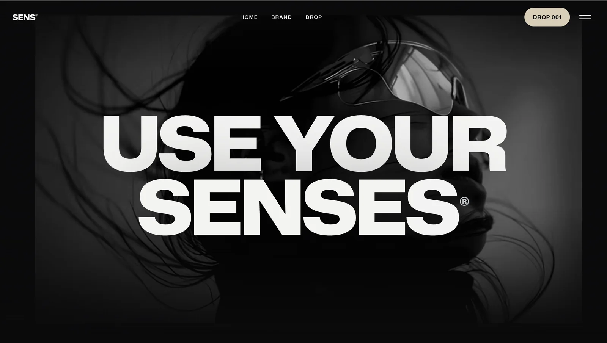

SENS
A streetwear brand co-founded with a collaborator, from the first samples to the site.
Evidence

Notes
[ Paragraph 1 · about 120–200 words · Why SENS exists. What you and your co-founder wanted to make that you couldn't find, and who it's for. ]
[ Paragraph 2 · about 120–200 words · The work so far. Samples, design decisions, the site, what you learned from the first run. ]
[ Paragraph 3 · about 120–200 words · Where it's going. What the second sample is, what's next, and what you'd do differently. ]